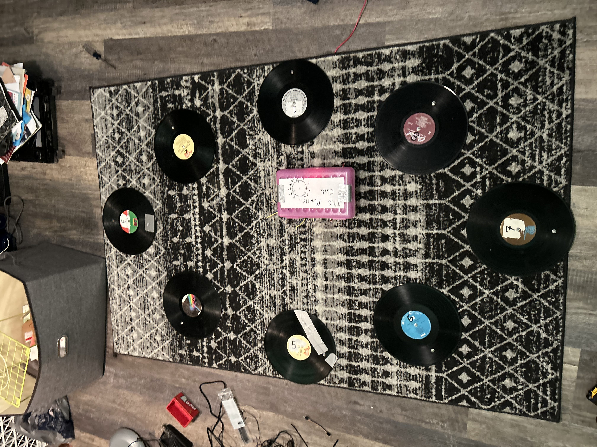

Music Circle
Summer 2024
Setup

Learning the Setup
Waiting
Playing a Game
Commentary
An initial iteration of this concept has been tried with kindergarten through fourth grade students at a summer enrichment program managed by Cleveland Play House. Here, an interactive media system was designed, constructed, and exhibited over the course of 5 weeks, allowing for the simultaneous participation of up to 8 student’s engaged in educational games. The system consisted of a series 8 of Vinyl records in a fixed, semi-circular arrangement on a carpet. Each record contained 2 exposed, metal screw-heads connected via conducting wires to a central Makey-Makey device. This device was programmed to send keyboard input to a connected computer via usb. A custom software was developed in Python to design audio-visual educational games which were uniquely responsive to touch events from each participant.
Three games were designed based around music, image-movement, and spelling. The music game assisted in teaching melodic patterns, rhythms, and group performance. For a given song, such as twinkle-twinkle little star, the needed pitches to produce the song were distributed around the circle. With assistance from the teacher, the kids learned to recognize the order, rhythm and timing they needed to trigger. The image-movement activity was designed for kindergarteners, and challenged them to pay attention and control the movement of an animal, in this example it was a frog, on screen. Lastly, a spelling game was designed based on the NY-times spelling-bee. A selection of letters was distributed to each participant, and they were tasked with forming words out of those characters and communicating with each other to collectively type out the word.
Future Work
After hosting these activities in several class and reflecting upon observations of how the kids interacted with the system, two major design weaknesses became clear: The viewing screen and touchpoints. Due to the game screen being located on a vertical wall outside of the circle, the kids’ attention was directed outwards. This made created an awkward viewing angle and directed their gaze away from each other and to the touch points. Unfortunately, this design promoted less collaboration and learning through peer observation. Further, the touch point apparatus required simultaneous touch of two metal screwheads embedded at the surface of the carpet. This design proved to be confusing and difficult for the kids as it lacked a physical stimulus indicating that they successfully triggered the button, and with their rudimentary dexterity, it was difficult to coordinate deliberate and time-sensitive attacks on such a small, untextured surface.

To improve upon the viewing angle design, a future proposal is to create a floor projected game surface via a stand mounted overhead projector. In this way, the game screen will exist in the same plane in which the kids are sitting and touching. It is predicted that this will provide an unobstructed and intuitive viewing experience which better promotes collaboration through participant regionalization. As opposed to the wall mounted screen, this design would reduce mental discontinuity between the participant’s location and controls and how they are visualized as events on screen. One common piece of feedback with iteration 1 was that they couldn’t tell which on-screen icon was theirs to control. By spatially connecting the screen radially in front of their seats, it will help the participants distinguish between which their own actions and those of their peers.